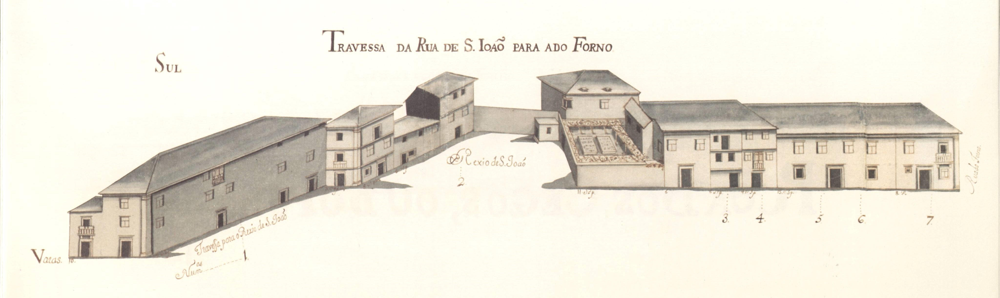

Legenda:Travessa da Rua de S. João para a do Forno - vista norte.
Legenda:Travessa da Rua de S. João para a do Forno - vista sul.
Número: 1, Enfiteuta: None,Foro: None, Descrição: Corresponde ao n.º 7 da Rua de S. João,
para onde tem a frontaria e serventia principais.
Número: 2, Enfiteuta: None,Foro: None, Descrição: No ano de 1607, por escambo realizado entre o Cabido
e a Companhia de Jesus, esta casa foi trocada com o casal de Real,
situado na freguesia de S. Jerónimo de Real.
Confronta com quintal dos padres da Companhia de Jesus.
Número: 3, Enfiteuta: Teresa de Araújo, mulher de Manuel de Sousa, vidraceiro,Foro: 240 reis e 1 capão, Descrição: Emprazamento feito em 1724. Confronta, do nascente, com casa for. ao chantrado.
Número: 4, Enfiteuta: Manuel de Faria,Foro: 400 reis e 1 capão, Descrição: Foi construída em pertenças da casa n.º 3, depois do ano de 1534.
Número: 5, Enfiteuta: Carlos de Magalhães de Azevedo, Cónego,Foro: 475 reis e 2 capões, Descrição: A casa n.º 6 confronta, de nascente, com casa for. à cororaria.
Pertence, também, ao enfiteuta destas duas casas o n.º 12 da rua do Forno.
Número: 6, Enfiteuta: Carlos de Magalhães de Azevedo, Cónego,Foro: 250 reis e galinhas, Descrição: A casa n.º 6 confronta, de nascente, com casa for. à cororaria.
Pertence, também, ao enfiteuta destas duas casas o n.º 12 da rua do Forno.
Número: 7, Enfiteuta: Félix José Machado,Foro: 420 e 4 galinhas, Descrição: Encontram-se unidos a este prazo os n.º 10 e 11 da Rua do Forno,
desde o ano de 1596
Número: 8 e 9, Enfiteuta: Não disponível,Foro: Não disponível, Descrição: Pertencem ao n.º 9 da Rua do Forno, para onde têm a frontaria e serventia principais.
A casa n.º 9 confronta, do nascente, com casa foreira cororaria e ficou unida ao n.º 8 no ano
de 1674.
Número: 10, Enfiteuta: Não disponível,Foro: 115 reis e 8 pretos (de censo), Descrição: Parte desta casa pertence à Esmola e parte ao chantrado.
Confronta, do poente, com casa foreira à cororaria e com o n.º 9.
Número: 11, Enfiteuta: Padre Luís de Faria,Foro: 100 reis e 1 galinha, Descrição: Não disponível
Número: 12, Enfiteuta: Lic. Manuel de Faria da Cunha,Foro: 70 reis e 1 galinha, Descrição: Foi construída em pertenças do n.º 11 no ano de 1694.
Número: 13, Enfiteuta: Manuel Francisco, alfaiate,Foro: 410 e 4 galinhas, Descrição: Confronta, do nascente, com casa foreira ao Hospital de S. Marcos.